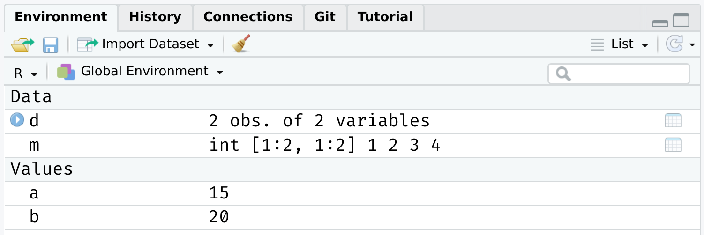

1+2 ### Addition[1] 36-7 ### Subtraction[1] -15/2 ### Division[1] 2.52^3 ### Exponentiation[1] 82+4*1^3 ### Standard order of precedence (`*` before `+`, etc.)[1] 6Introduction to R
This set of slides was written by Grant McDermott.
☑ Pull from the lecture repo to get the latest slides.
☑ Did everyone manage to try the simple shell exercises at the back of our last lecture?
☑ Update your R packages. Do this regularly as a matter of good habit.
We’re going to work almost exclusively in base R today.
install.packages("dplyr"), dependencies = TRUE).Today and the next lecture are going to be very hands on.
This is deliberate.
R is a powerful calculator and recognizes all of the standard arithmetic operators:
We can also invoke modulo operators (integer division & remainder). - Very useful when dealing with time, for example.
R also comes equipped with a full set of logical operators and Booleans, which follow standard programming protocol. For example:
[1] FALSE[1] FALSE[1] TRUE[1] TRUEMuch like standard arithmetic, logic statements follow a strict order of precedence. Logical operators (>, ==, etc) are evaluated before Boolean operators (& and |). Failure to recognise this can lead to unexpected behaviour…
What’s happening here is that R is evaluating two separate “logical” statements: - 1 > 0.5, which is is obviously TRUE. - 2, which is TRUE(!) because R is “helpfully” converting it to as.logical(2).
!We use ! as a short hand for negation. This will come in very handy when we start filtering data objects based on non-missing (i.e. non-NA) observations.
%in%To see whether an object is contained within (i.e. matches one of) a list of items, use %in%.
There’s no equivalent “not in” command, but how might we go about creating one? - Hint: Think about negation…
We’ll get to assignment shortly. However, to preempt it somewhat, we always use two equal signs for logical evaluation.
What do you think will happen if we evaluate 0.1 + 0.2 == 0.3?
Problem: Computers represent numbers as binary (i.e. base 2) floating-points. More here. - Fast and memory efficient, but can lead to unexpected behaviour. - Similar to the way that standard decimal (i.e. base 10) representation can’t precisely capture certain fractions (e.g. \(\frac{1}{3} = 0.3333...\)).
In R, we can use either <- or = to handle assignment.1
.footnote[ 1 The <- is really a < followed by a -. It just looks like one thing b/c of the font I’m using here.]
<-<- is normally read aloud as “gets”. You can think of it as a (left-facing) arrow saying assign in this direction.
=You can also use = for assignment.
Most R users (purists?) seem to prefer <- for assignment, since = also has specific role for evaluation within functions. - We’ll see lots of examples of this later. - But I don’t think it matters; = is quicker to type and is more intuitive if you’re coming from another programming language. (More discussion here and here.)
Bottom line: Use whichever you prefer. Just be consistent.
For more information on a (named) function or object in R, consult the “help” documentation. For example:
Or, more simply, just use ?:
Aside 1: Comments in R are demarcated by #. - Hit Ctrl+Shift+c in RStudio to (un)comment whole sections of highlighted code.
Aside 2: See the Examples section at the bottom of the help file? - You can run them with the example() function. Try it: example(plot).
For many packages, you can also try the vignette() function, which will provide an introduction to a package and it’s purpose through a series of helpful examples. - Try running vignette("dplyr") in your console now.
I highly encourage reading package vignettes if they are available. - They are often the best way to learn how to use a package.
One complication is that you need to know the exact name of the package vignette(s). - E.g. The dplyr package actually has several vignettes associated with it: “dplyr”, “window-functions”, “programming”, etc. - You can run vignette() (i.e. without any arguments) to list the available vignettes of every installed package installed on your system. - Or, run vignette(all = FALSE) if you only want to see the vignettes of any loaded packages.
Similar to vignettes, many packages come with built-in, interactive demos.
To list all available demos on your system:1
.footnote[ 1 How would you limit the demos to one particular package?]
In our very first lecture, I mentioned R’s approach to object-oriented programming (OOP), which is often summarised as:
“Everything is an object and everything has a name.”
In the next two sections, I want to dive into this idea a little more. I also want to preempt some issues that might trip you up if you new to R or OOP in general. - At least, they were things that tripped me up at the beginning.
The good news, as well see, is that avoiding and solving these issues is pretty straightforward. - Not to mention: A very small price to pay for the freedom and control that R offers us.
Okay, this slide is just to let you know that I’m being a little fast and loose with terms.
Most obviously, there are actually multiple OOP frameworks in R. - S3, S4, R6… - Hadley Wickham’s “Advanced R” provides a very thorough overview of the main ones.
But for our purposes, I think it is much more helpful to think about (a) the shared characteristics of these different systems and (b) the broad implications of OOP in R. - What we lose in detail, we hopefully gain in perspective. - But do read Hadley’s book if you get the chance. It’s incredibly helpful (as are all his books).
It’s important to emphasise that there are many different types (or classes) of objects.
We’ll revisit the issue of “type” vs “class” in a slide or two. For the moment, it is helpful simply to name some objects that we’ll be working with regularly: - vectors - matrices - data frames - lists - functions - etc.
Most likely, you already have a good idea of what distinguishes these objects and how to use them. - However, bear in mind that there subtleties that may confuse while you’re still getting used to R. - E.g. There are different kinds of data frames. We’ll soon encounter “tibbles” and “data.tables”, which are enhanced versions of the standard data frame in R.
Each object class has its own set of rules (“methods”) for determining valid operations. - For example, you can perform many of the same operations on matrices and data frames. But there are some operations that only work on a matrix, and vice versa. - At the same time, you can (usually) convert an object from one type to another.
Use the class, typeof, and str commands if you want understand more about a particular object.
## d = data.frame(x = 1:2, y = 3:4) ### Create a small data frame called "d".
class(d) ### Evaluate its class.[1] "data.frame"[1] "list"'data.frame': 2 obs. of 2 variables:
$ x: int 1 2
$ y: int 3 4PS — Confused by the fact that typeof(d) returns “list”? See here.
Of course, you can always just inspect/print an object directly in the console. - E.g. Type d and hit Enter.
The View() function is also very helpful. This is the same as clicking on the object in your RStudio Environment pane. (Try both methods now.) - E.g. View(d).
Let’s go back to the simple data frame that we created a few slides earlier.
Now, let’s try to run a regression1 on these “x” and “y” variables:
.footnote[ 1 Yes, this is a dumb regression with perfectly co-linear variables. Just go with it. ]
Uh-oh. What went wrong here? (Answer on next slide.)
The error message provides the answer to our question:
*### Error in eval(predvars, data, env): object 'y' not foundR can’t find the variables that we’ve supplied in our Global Environment:

Put differently: Because the variables “x” and “y” live as separate objects in the global environment, we have to tell R that they belong to the object d. - Think about how you might do this before clicking through to the next slide.
There are a various ways to solve this problem. One is to simply specify the datasource:
Call:
lm(formula = y ~ x, data = d)
Coefficients:
(Intercept) x
2 1 I wanted to emphasize this global environment issue, because it is something that Stata users (i.e. many economists) struggle with when they first come to R. - In Stata, the entire workspace essentially consists of one (and only one) data frame. So there can be no ambiguity where variables are coming from. - However, that “convenience” comes at a really high price IMO. You can never read more than two separate datasets (let alone object types) into memory at the same time, have to resort all sorts of hacks to add summary variables to your dataset, etc. - Speaking of which…
As I keep saying, R’s ability to keep multiple objects in memory at the same time is a huge plus when it comes to effective data work. - E.g. We can copy an exiting data frame, or create new one entirely from scratch. Either will exist happily with our existing objects in the global environment.
Now with d2 added
Again, however, it does mean that you have to pay attention to the names of those distinct data frames and be specific about which objects you are referring to. - Do we want to run a regression of “y” on “x” from data frame d or data frame d2?
We’ve seen that we can assign objects to different names. However, there are a number of special words that are “reserved” in R. - These are are fundamental commands, operators and relations in base R that you cannot (re)assign, even if you wanted to. - We already encountered examples with the logical operators.
See here for a full list, including (but not limited to):
In addition to the list of strictly reserved words, there is a class of words and strings that I am going to call “semi-reserved”. - These are named functions or constants (e.g. pi) that you can re-assign if you really wanted to… but already come with important meanings from base R.
Arguably the most important semi-reserved character is c(), which we use for concatenation; i.e. creating vectors and binding different objects together.
(Continued from previous slide.)
In this case, thankfully nothing. R is “smart” enough to distinguish between the variable c = 4 that we created and the built-in function c() that calls for concatenation.
However, this is still extremely sloppy coding. R won’t always be able to distinguish between conflicting definitions. And neither will you. For example:
Bottom line: Don’t use (semi-)reserved characters!
A similar issue crops up when we load two packages, which have functions that share the same name. E.g. Look what happens we load the dplyr package.
The messages that you see about some object being masked from ‘package:X’ are warning you about a namespace conflict. - E.g. Both dplyr and the stats package (which gets loaded automatically when you start R) have functions named “filter” and “lag”.
The potential for namespace conflicts is a result of the OOP approach.1 - Also reflects the fundamental open-source nature of R and the use of external packages. People are free to call their functions whatever they want, so some overlap is only to be expected.
.footnote[ 1 Similar problems arise in virtually every other programming language (Python, C, etc.)]
Whenever a namespace conflict arises, the most recently loaded package will gain preference. So the filter() function now refers specifically to the dplyr variant.
But what if we want the stats variant? Well, we have two options: 1. Temporarily use stats::filter() 2. Permanently assign filter = stats::filter
package::function()We can explicitly call a conflicted function from a particular package using the package::function() syntax. For example:
Time Series:
Start = 1
End = 10
Frequency = 1
[1] 3 5 7 9 11 13 15 17 19 NAWe can also use :: for more than just conflicted cases. - E.g. Being explicit about where a function (or dataset) comes from can help add clarity to our code. Try these lines of code in your R console.
dplyr::starwars ### Print the starwars data frame from the dplyr package
scales::comma(c(1000, 1000000)) ### Use the comma function, which comes from the scales package???
The :: syntax also means that we can call functions without loading package first. E.g. As long as dplyr is installed on our system, then dplyr::filter(iris, Species=="virginica") will work.
function = package::functionA more permanent solution is to assign a conflicted function name to a particular package. This will hold for the remainder of your current R session, or until you change it back. E.g.
I would generally advocate for the temporary package::function() solution.
Another good rule of thumb is that you want to load your most important packages last. (E.g. Load the tidyverse after you’ve already loaded any other packages.)
Other than that, simply pay attention to any warnings when loading a new package and ? is your friend if you’re ever unsure. (E.g. ?filter will tell you which variant is being used.) - In truth, problematic namespace conflicts are rare. But it’s good to be aware of them.
A final thing to say about namespace conflicts is that they don’t only arise from loading packages. They can arise when users create their own functions with a conflicting name. - E.g. If I was naive enough to create a new function called c().
In a similar vein, one of the most common and confusing errors that even experienced R programmers run into is related to the habit of calling objects “df” or “data”… both of which are functions in base R! - See for yourself by typing ?df or ?data.
Again, R will figure out what you mean if you are clear/lucky enough. But, much the same as with c(), it’s relatively easy to run into problems. - Case in point: Triggering the infamous “object of type closure is not subsettable” error message. (See from 1:45 here.)
We’ve already seen an example of indexing in the form of R console output. For example:
The [1] above denotes the first (and, in this case, only) element of our output.1 In this case, a vector of length one equal to the value “3”.
More importantly, we can also use [] to index objects that we create in R.
[1] 4[1] 4 6It also works on larger arrays (vectors, matrices, data frames, and lists). For example:
# A tibble: 1 × 1
name
<chr>
1 Luke SkywalkerWhat does starwars[1:3, 1] give you?
We haven’t covered them properly yet (patience), but lists are a more complex type of array object in R. - They can contain a random assortment of objects that don’t share the same class, or have the same shape (e.g. rank) or common structure. - E.g. A list can contain a scalar, a string, and a data frame. Or you can have a list of data frames, or even lists of lists.
The relevance to indexing is that lists require two square brackets [[]] to index the parent list item and then the standard [] within that parent item. An example might help to illustrate:
Lists provide a nice segue to our other indexing operator: $. - Let’s continue with the my_list example from the previous slide.
Lists provide a nice segue to our other indexing operator: $. - Let’s continue with the my_list example from the previous slide.
*### $a
### [1] "hello"
###
*### $b
### [1] 1 2 3
###
*### $c
### x y
### 1 1 6
### 2 2 7
### 3 3 8
### 4 4 9
### 5 5 10Notice how our (named) parent list objects are demarcated: “\(a", "\)b” and “$c”.
We can call these objects directly by name using the dollar sign, e.g.
[1] "hello"[1] 3[1] 1 2 3 4 5Aside: Typing View(my_list) (or, equivalently, clicking on the object in RStudio’s environment pane) provides a nice interactive window for exploring the nested structure of lists.
The $ form of indexing also works (and in the manner that you probably expect) for other object types in R.
In some cases, you can also combine the two index options. - E.g. Get the 1st element of the “name” column from the starwars data frame.
However, note some key differences between the output from this example and that of our previous starwars[1, 1] example. What are they? - Hint: Apart from the visual cues, try wrapping each command in str().
The last thing that I want to say about $ is that it provides another way to avoid the “object not found” problem that we ran into with our earlier regression example.
Use rm() to remove an object or objects from your working environment.
You can also use rm(list = ls()) to remove all objects in your working environment (except packages), but this is frowned upon. - Better just to start a new R session.
Detaching packages is more complicated, because there are so many cross-dependencies (i.e. one package depends on, and might even automatically load, another.) However, you can try, e.g. detach(package:dplyr) - Again, better just to restart your R session.
You can use dev.off() to removing any (i.e. all) plots that have been generated during your session. For example, try this in your R console:
You may also have noticed that RStudio has convenient buttons for clearing your workspace environment and removing (individual) plots. Just look for these icons in the relevant window panels:

ScPo Intro To Programming 2023